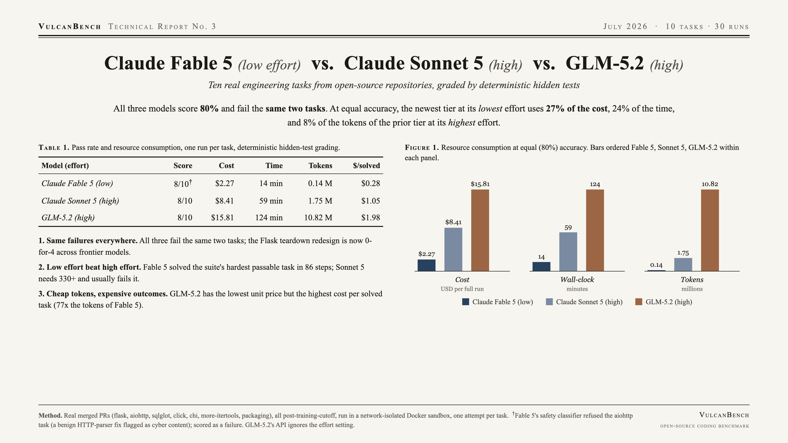

All three models score 80 percent on identical real-world engineering tasks, failing the same two. At equal accuracy, resource consumption diverges by nearly an order of magnitude: the newest frontier tier at its lowest reasoning effort completes the suite for 27 percent of the cost, 24 percent of the time, and 8 percent of the tokens of the prior tier at its highest effort. Correctness no longer discriminates these models; cost, latency, and availability carry the signal.

| Model (effort) | Score | Cost | Time | Tokens |
|---|---|---|---|---|
| Claude Fable 5 (low) | 8/10 | $2.27 | 14 min | 0.14 M |
| Claude Sonnet 5 (high) | 8/10 | $8.41 | 59 min | 1.75 M |
| GLM-5.2 (high) | 8/10 | $15.81 | 124 min | 10.82 M |
Same failures everywhere. Every model fails the Flask teardown redesign and the aiohttp deferred-upgrade fix. Both are multi-site behavioral contracts.
Minimum effort matched maximum effort. Fable 5 at low effort solved the suite's hardest passable task in 86 steps; Sonnet 5 at high effort thrashes for 330-plus steps and usually fails it. Per solved task, Fable cost $0.28 versus Sonnet's $1.05 and GLM's $1.98.
Cheap tokens, expensive outcomes. GLM-5.2 has the lowest unit price yet the highest cost per solved task, consuming 77x the tokens of Fable 5. On agentic work, token efficiency dominates unit price.
Ten tasks from real merged pull requests (flask, aiohttp, sqlglot, click, chi, more-itertools, packaging; Python and Go), all merged after model training cutoffs, graded by deterministic hidden tests in a network-isolated Docker sandbox. One run per task per model; prompt caching enabled. The full four-page report is available below.
{kind=link}
{kind=link}